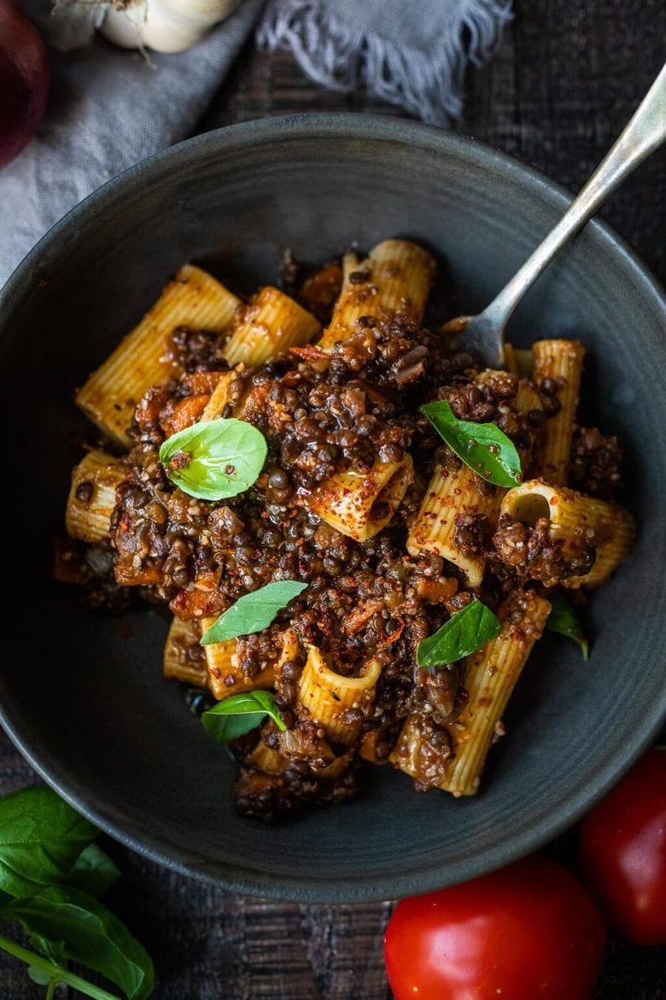

Lentil Bolognese

Description
Rich and robust, this vegan Lentil Bolognese is hearty, “meaty” and full of depth of flavor.
Toss it with your favorite pasta, or spoon it over creamy polenta- either way,
this simple nourishing vegan meal is one the whole family will enjoy.
Ingredients
- Lentils
- Onions and garlic
- Carrots and celery
- Fresh oregano or thyme
- Tomato paste
- Red wine
- Fresh tomatoes
- Veggie stock
- Hemp seeds
- Balsamic vinegar
Steps
- Saute onion in olive oil until fragrant.
- Add carrots, celery and garlic, continue cooking and stirring about 5 minutes. Add herbs and seasonings.
- Add tomato paste, browning it a bit. Deglaze -add a generous splash of red wine and cook this off. (Optional)
- Add tomatoes and their juices. Add the lentils, hemp seeds or walnut nuts, and broth.
- Bring to a boil and cover. Simmer for 20-30 minutes
- Once the lentils are tender, remove the lid and cook off some of the liquid.
- Taste and adjust seasonings, and stir in the balsamic vinegar.
- Serve! Spoon this over creamy polenta, or toss it with your favorite pasta. Keep it vegan if you like or top with parmesan or pecorino cheese.